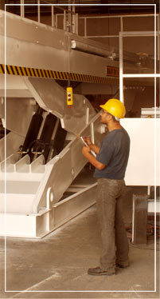

Consejos de seguridad
Un elevador es una maquina que debe manejarse con mucha responsabilidad para evitar accidentes
que pueden ser muy graves, los elevadores APF están diseñados bajo la norma ANSI 29.1 que rige
la fabricación de maquinas en movimiento.
Antes de la entrega al cliente se realizan pruebas exhaustivas de el elevador que nos permitan
tener un control de las presiones y amperajes adecuados para el funcionamiento correcto de este.
Incluimos calcomanías de seguridad con ilustraciones para la fácil comprensión de las medidas
de seguridad que se deben seguir para la operación correcta y sin accidentes.
Es muy importante capacitar al operador y orientar al personal en general para que trabajen
con seriedad con el elevador.
